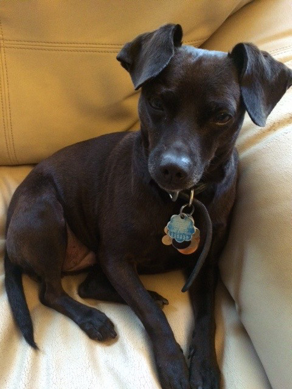

Walk Fourward
Home
Services
Testimonials
The Team
Gallery
FAQs
walkfourward@gmail.com
0466962747
Walk Fourward on Facebook
Meet the Critters!
Feathery, scaley, hooved or tall, we care for creatures great and small.
